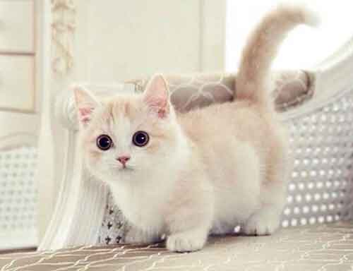
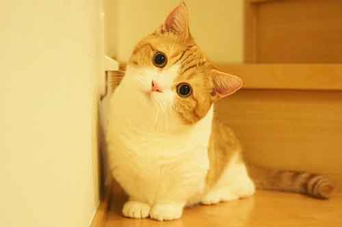
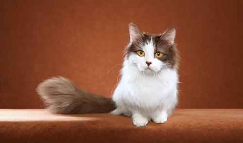

Mèo Munchkin chân ngắn – Giống mèo lùn nhất thế giới
Mèo Munchkin chân ngắn là một trong giống mèo dễ thương nhất thế giới, có nguồn gốc từ Hoa Kỳ với đặc điểm nổi bật là chân ngắn, dáng lùn đã đi vào huyền thoại.Đặc điểm giống mèo Munchkin
Mèo Munchkin là một trong nhiều giống mèo được yêu quý nhất hiện nay. Có lẽ đôi chân ngắn cùng dáng đi chảy mỡ đã đốn tim hàng triệu fan yêu mèo trên thế giới. Chiều dài cơ thể gấp 2,5 lần chiều cao, 4 chân không bao giờ được duỗi thẳng, không khuỵu gối khiến Munchkin cực kỳ dễ thương. Cân nặng của chúng chỉ từ 3-5 kg.
Lông của Munchkin mượt và có tác dụng giúp chúng bảo vệ cơ thể tránh được điều kiện khắc nghiệt của thời tiết, lông của chúng thường có màu kem, xám, socola, đen trắng… lông ở đuôi dài hơn.

Với dáng vẻ nấm lùn của mình, Munchkin được mọi người yêu quý bởi sự ngộ nghĩnh đáng yêu. Ngay lập tức, giống mèo này đã trở thành những chú mèo ảnh được ưa thích bậc nhất trên thế giới. Mèo Munchkin thân thiện với con người, đặc biệt là trẻ em và những vật nuôi khác. Khác với giống mèo khác, chúng không thể bật cao và chạy nhảy leo trèo nhiều như các giống mèo khác nên rất dễ chịu.
Cách chăm sóc mèo Munchkin chân ngắn
Có thể nói rằng, với các giống mèo khác, Munchkin có ưu điểm hơn hẳn về việc phá phách nghịch ngợm khi chúng gần như không đủ khả năng nhảy nhót bởi đôi chân ngắn dễ thương của mình.
Mèo Munchkin rất dễ chăm sóc và nuôi dưỡng, bạn chỉ cần quan tâm tới bộ lông của chúng. Nên chải chuốt lông của chúng hàng tuần và sử dụng các loại sữa tắm và dầu gội tốt cho lông. Munchkin rụng lông rất ít nên bạn chỉ cần chải thường xuyên là có thể kiểm soát được lượng lông rụng.

Chỉ trừ đôi chân và các vấn đề về xương khớp, mèo Muchkin rất khỏe mạnh. Khi nuôi cần chú ý tới việc tránh gây tổn thương cho đôi chân nhỏ.
Chăm sóc lông mèo chân ngắn Munchkin
Không chỉ riêng mèo Munchkin mà các giống mèo khác đều cần phải quan tâm tới bộ lông. Bộ lông giữ một vị trí quan trọng với loài mèo khi chúng giữ ấm, làm đẹp cho mèo.

Với Munchkin bộ lông ngắn ôm sát, rụng lông ít đã là một lợi thế tuyệt vời với những chủ nhân bận bịu hay không có nhiều thời gian chải lông cho mèo. Tuy nhiên hàng ngày hãy dành ra vài phút vuốt ve và chải lông rụng thường xuyên cho mèo cưng nha.
Vệ sinh vùng mặt, hốc mắt, tai cho Munchkin
Nhiều bạn nuôi mèo cũng không lạ gì với việc mắt mèo nhiều gỉ. Điều này khá bình thường, nhưng đừng vì thế mà chủ quan, hãy vệ sinh cho mèo cưng thường xuyên để tránh các bệnh về mắt ảnh hưởng tới mèo.
Ngoài ra, việc vệ sinh tai thường xuyên cũng rất cần thiết. Khu vực tai chứa nhiều vi khuẩn và bụi bẩn tích tụ nhiều. Thậm chí nhiều bé còn mắc chứng ve tai.